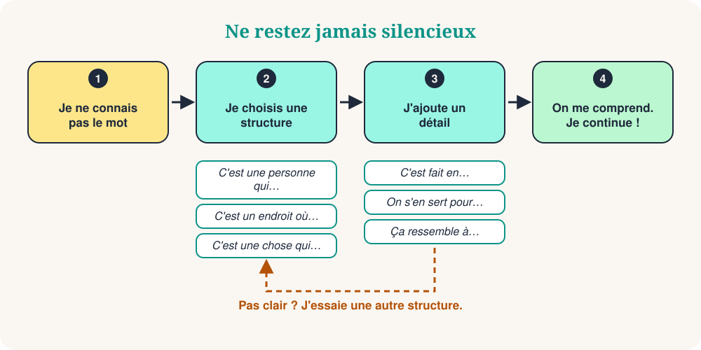

Vous êtes au marché. Vous voulez demander un chargeur, mais le mot a disparu. Votre cerveau dit : traduis ! Il existe une meilleure solution. Ne cherchez pas le mot manquant. Décrivez-le.
C'est une vraie compétence, et les francophones l'utilisent aussi. Avec 10 structures de phrases, vous pouvez décrire une personne, un lieu, un objet ou un moment. Souvent, l'autre personne vous donne le mot. Ensuite, vous continuez à parler.

Les 10 structures de phrases
Apprenez la structure, pas le mot. Lisez l'exemple à voix haute, puis essayez la même structure avec un autre mot.
| # | Structure | Exemple | Pour décrire |
|---|---|---|---|
| 1 | C'est une personne qui… | C'est une personne qui enseigne aux enfants. | une personne (un professeur) |
| 2 | C'est un endroit où… | C'est un endroit où on achète à manger. | un lieu (un marché) |
| 3 | C'est une chose qui… | C'est une chose qui donne l'heure. | un objet (une horloge) |
| 4 | C'est quelque chose qu'on utilise pour… | C'est quelque chose qu'on utilise pour écrire. | un outil (un stylo) |
| 5 | C'est un moment où… | C'est un moment où on dort. | un moment (la nuit) |
| 6 | C'est un jour où… | C'est un jour où on fait la fête. | un jour spécial (un jour férié) |
| 7 | Par exemple… | J'aime le sport. Par exemple, le football et le tennis. | une idée : donner des exemples |
| 8 | Ça veut dire… | « Énorme », ça veut dire très grand. | un mot : utiliser des mots simples |
| 9 | Ça ressemble à… | Ça ressemble à un petit ordinateur. | l'apparence : comparer |
| 10 | Comment dit-on… en français ? | Comment dit-on ça en français ? | n'importe quel mot : demander de l'aide |
En situation
Le serveur sourit et vous apporte un stylo.
Context: Dans un café, vous voulez signer l'addition.
Votre interlocuteur répond : « Le marché ? C'est à deux rues d'ici. »
Context: Dans une nouvelle ville, vous cherchez le marché.
Votre ami rit : « Une banane ! »
Context: À une fête, vous avez oublié le mot.
10 expressions de survie
Ce sont de petits ajouts. Placez-les après une structure pour donner plus de détails.
| # | Expression | Exemple |
|---|---|---|
| 1 | C'est une sorte de… | C'est une sorte d'animal. |
| 2 | C'est fait en… | C'est fait en bois ou en métal. |
| 3 | On s'en sert pour… | On s'en sert pour voyager. |
| 4 | C'est le contraire de… | C'est le contraire de « cher ». |
| 5 | Ça me fait penser à… | Ça me fait penser à de la musique. |
| 6 | Ça a… | Ça a quatre roues. |
| 7 | C'est un peu comme… | C'est un peu comme une voiture. |
| 8 | Ça vient de… | Ça vient d'Italie. |
| 9 | Je ne connais pas le mot, mais… | Je ne connais pas le mot, mais c'est pour cuisiner. |
| 10 | Vous pouvez répéter, s'il vous plaît ? | Pardon, vous pouvez répéter plus lentement ? |
La méthode en 3 étapes
Décrivons un parapluie sans dire le mot :
- Catégorie : C'est une chose qui protège.
- Fonction : On s'en sert quand il pleut.
- Détail : Ça ressemble à un petit toit.
Trois phrases courtes. L'autre dit « Un parapluie ! » et la conversation continue.
Évitez ces 4 pièges
Petit quiz
❓ Vous oubliez le mot « boulangerie ». Quelle phrase fonctionne le mieux ?
« C'est un endroit où… » est la structure idéale pour les lieux. L'autre entend « pain » et « endroit » : une boulangerie !
❓ Quelle phrase décrit des « ciseaux » ?
Des ciseaux sont un outil : utilisez « C'est quelque chose qu'on utilise pour… ».
❓ Un ami dit : « C'est le contraire de cher. » Quel est le mot ?
Le contraire de cher, c'est bon marché. Une bonne façon d'expliquer les adjectifs !
Votre entraînement de 5 minutes
- Regardez autour de vous et choisissez 5 objets.
- Décrivez chacun avec une structure, sans dire son nom.
- Ajoutez une expression de survie aux deux plus difficiles.
- Enregistrez-vous avec votre téléphone et écoutez votre voix.
- Demain, recommencez avec 5 nouveaux objets.
En résumé
Être fluide, ce n'est pas connaître tous les mots. C'est ne jamais rester silencieux. Apprenez les structures, ajoutez un détail et continuez à parler.
“Décrivez-le. Ne le traduisez pas.”